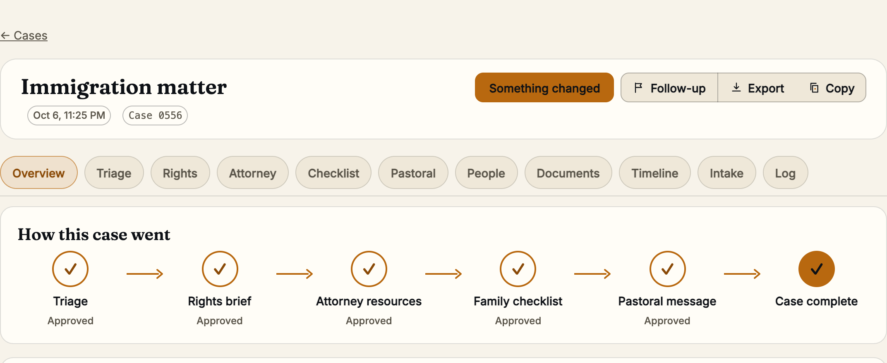

01 · The call
2:07 AM. A pastor's phone rings.
A husband was detained last evening. The family needs help now.
no lawyer on the line

01 · The call
A husband was detained last evening. The family needs help now.
no lawyer on the line
03 · The product
Each crisis has its own stages. Two run today.
two live, two on the way
The pastoral message carries a Bible verse, quoted from a verified list.

04 · The demo
Nothing moves on without the pastor. Nothing is sent.


real screens, a made-up family
05 · What the family gets
A PDF the pastor can hand over.
the pastor reads every line first


12 · Close
An AI Crisis Response Agent.
The next call will come. Nury is there when the pastor picks up.
Nury is an AI assistant, not a lawyer, pastor, counselor, or therapist. This is general legal information, not legal advice. Built in Boulder, Colorado, during the Gloo AI Hackathon, October 6 to 8, 2026. Every step is in the build log.

Family copy and pastor copy, as PDF or a zip.

Slides (g to close; G shows or hides gated slides)